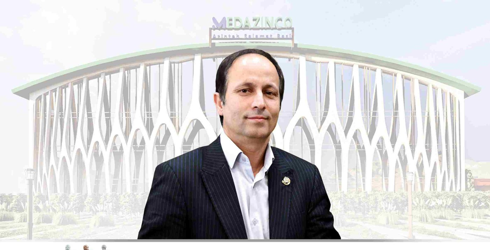
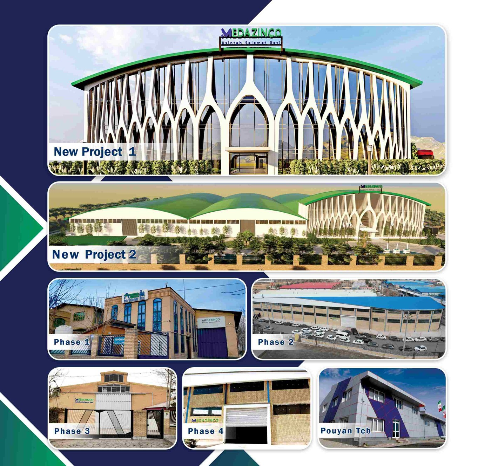

۲۵+
سال تجربه
۸۷
قطعه در کاتالوگ
۴
فاز تولید
مدیریت

مهندس رضا عبداللهی
بنیانگذار شرکت آذین طب سلامت رازی
مهندس رضا عبداللهی، بنیانگذار آیندهنگر شرکت آذین طب سلامت رازی، یکی از تولیدکنندگان پیشرو ایمپلنتهای ارتوپدی و سیستمهای فیکساسیون خارجی است. با پیشینهای در مهندسی، مدیریت کسبوکار و فناوری ارتوپدی، و بیش از ۲۵ سال تجربه در صنعت تجهیزات پزشکی، نقش کلیدی در ارتقای تولید ارتوپدی از نظر کیفیت و نوآوری داشته است.
تحت مدیریت ایشان، شرکت آذین طب سلامت رازی از یک واحد تولیدی کوچک به نامی معتبر در راهحلهای ارتوپدی تبدیل شده و ایمپلنتهای دقیق خود را به بیمارستانها، جراحان و توزیعکنندگان در سطح ملی و بینالمللی عرضه میکند.
تحت مدیریت ایشان، شرکت آذین طب سلامت رازی از یک واحد تولیدی کوچک به نامی معتبر در راهحلهای ارتوپدی تبدیل شده و ایمپلنتهای دقیق خود را به بیمارستانها، جراحان و توزیعکنندگان در سطح ملی و بینالمللی عرضه میکند.
کارخانه و امکانات تولید

نمایی از پروژههای جدید و فازهای مختلف کارخانهی آذین طب سلامت رازی.
مشاهدهی کاتالوگ محصولات ←
۸۷ قطعه ارتوپدی، دستهبندیشده با نمایش سهبعدی تعاملی